")
")
 /
/ 
Passen Sie in diesem Dialog die tabellarische Darstellung verschiedener Biegelisten-Elemente an.
In der Biegeliste werden den einzelnen Positionen alle für den Biegebetrieb notwendigen Hinweise zugeordnet: Biegeanweisungen für 3D-Formen, Vermaßungen, Biegerollendurchmesser, Biegelistentexte sowie weitere, spezifische Tabellen und Vermerke.
·Jede Tabellenzeile enthält Informationen zur Position: eine Positionsnummer, eine Skizze, die Anzahl, den Stabdurchmesser, den Zuschnitt und das Positionsgewicht in [kg]. Außer bei Matten ist auch die Gesamtschnittlänge enthalten.
·Die Positionen werden nach Bewehrungstyp (Rundstahl, Matten, Gewindestäbe) und Stahlgüte sortiert den jeweiligen Tabellen zugeordnet. Die Stahlgüte wird standardmäßig mit "B 500 A" angegeben, sofern keine Stahlgüte zugeordnet ist. Siehe auch: Stahlgüte ändern.
·Die hier zur Auswahl stehenden Stiftnummern werden aus dem Dialog Grundwerte Allgemein übernommen und können dort editiert werden.
·Die Maßeinheit für die Angabe der Längen in der Biegeliste [mm, m, feet, inch] kann im Dialog Grundwerte Allgemein eingestellt werden. Für die Einheiten [feet] und [inch] kann zusätzlich die Genauigkeit (1/2, 1/4, 1/8 Fuß (ft) usw.) eingestellt werden.
·Vertikale Vermaßungen werden automatisch erzeugt, und nicht aus der Zeichnung übernommen.
·Bei Bogenteillängen wird der Außenradius, der Biegewinkel und die Bogenmaßlänge angegeben. Außenradien werden mit einem Pfeil und einem "R" auf der Außenseite des Bogens dargestellt.
·Positionen, die nicht verlegt sind und in der Form ? Ø ? vorliegen (Durchmesser/Typ/Anzahl sind nicht definiert), werden nicht in die Biegeliste aufgenommen.
|
Hinweis: Darstellungsfehler nach der Ausgabe |
|
Wenn Sie zu große Textgrößen für Überschriften oder z. B. eine zu große Beschriftungsgröße für Teillängen wählen, können bei der Ausgabe über den Dialog Ansicht Darstellungsfehler in der Biegeliste auftreten. Sie erhalten beim Aufruf des Ansichts-Dialogs eine entsprechende Meldung. Passen Sie in diesem Fall die notwendigen Parameter in diesem Dialog [Einstellungen Stahlliste] an. |

Optionen im Dialog "Einstellungen Stahlliste"
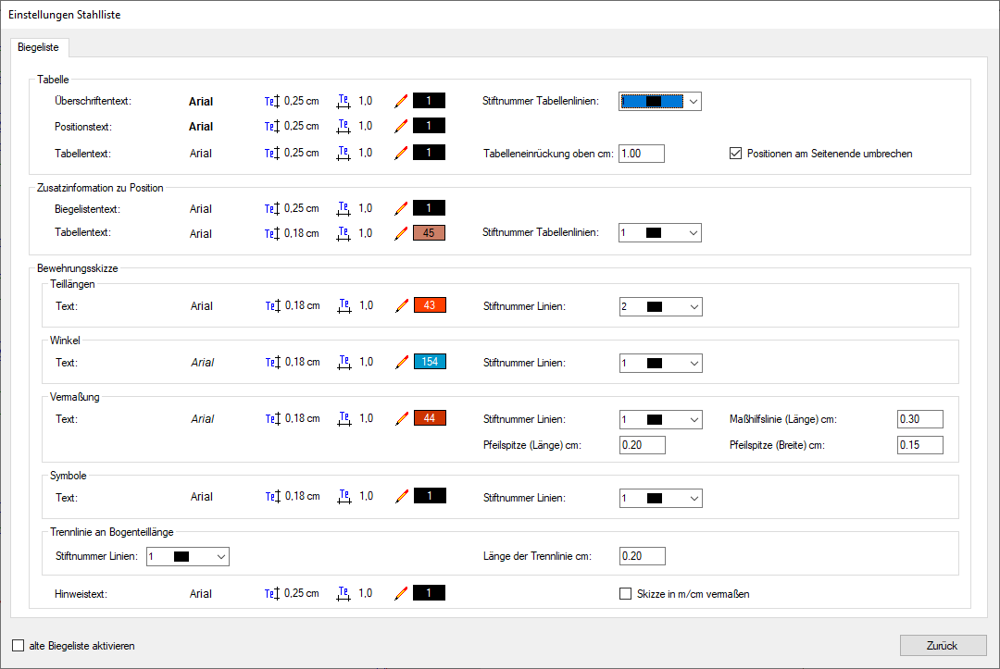 |
Eigenschaftenauswahl:
In dieser Zeile können Sie die Text- und Liniendarstellung des jeweiligen Biegelisten-Elements anpassen. Klicken Sie einen Text oder ein Icon an (A - D), um den Dialog Text Eigenschaften zu öffnen.
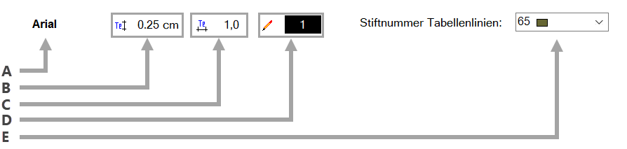 A. Gewählter Font und Vorschau mit Textattributen; |
|
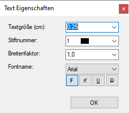 |
Wählen Sie aus den Dropdown-Listen die entsprechenden Eigenschaften. -Bei der Textgröße und dem Breitenfaktor können Sie auch einen Wert per Tastatur eingeben. Bestätigen Sie die Eingabe mit der Eingabetaste. -Die freie Textgröße Nr. 8 steht hier nicht zur Auswahl. -Die Attribute fett, kursiv, unterstrichen und durchgestrichen können nur bei Windows® TrueType Fonts (z. B. Arial) verwendet werden. Wenn Sie eine ISBCAD Schriftart (z. B. ISO) gewählt haben, werden die Schaltflächen für Textattribute ausgeblendet. Bestätigen Sie abschließend mit OK. |
Tabelle // Zusatzinformationen zu Position
In diesem Bereich gestalten Sie die Tabelle und die Tabellentexte.
Tabellenelemente
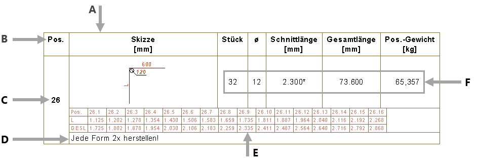 A. Stiftnummer Tabellenlinien; |
Breite der Tabellenspalten
Die Spaltenbreiten ergeben sich aus der Größe des Überschriftentextes und des im Dialog Text Eigenschaften gewählten Breitenfaktors. Die Teillängen der Bewehrungsskizze werden dementsprechend skaliert:
Textgröße Überschriftentext = 2.5, Breitenfaktor = 1:
Textgröße Überschriftentext = 3.5, Breitenfaktor = 1:
|
Tabelleneinrückung oben cm:
Geben Sie hier den Abstand zwischen dem Kopfbereich und der Tabelle in cm ein. Standardmäßig ist 1 cm eingestellt.
Diese Eingabe wirkt sich nur auf die Darstellung der Biegeliste aus.
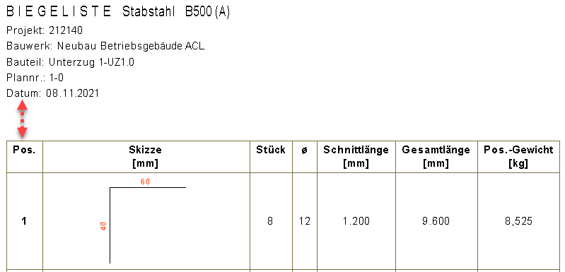 |
Positionen am Seitenende umbrechen
|
Option ist aktiviert. Wenn die Informationen zu einer Position am Seitenende nicht vollständig dargestellt werden können, findet ein Seitenumbruch statt. Dies wird durch ein Dreieck unter der Position symbolisiert. Auf der Folgeseite wird die entsprechende Position mit den zugehörigen Informationen nochmals gelistet. 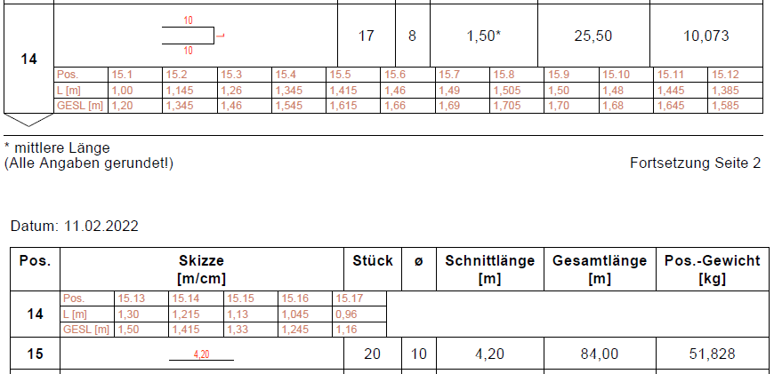 |
|
Option ist deaktiviert. Positionen, die am Seitenende nicht vollständig dargestellt werden können, werden auf der Folgeseite gelistet. Ein Seitenumbruch findet nur statt, wenn die Informationen zu einer Position nicht komplett auf eine Seite passen. 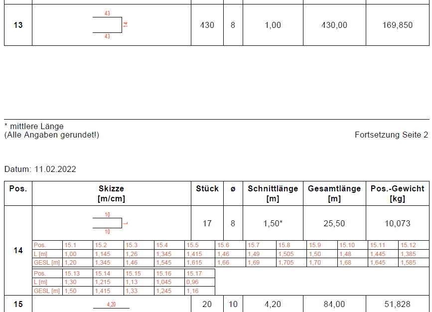 |


Bewehrungsskizze
Passen Sie hier die Darstellung der Bewehrungsskizze an.
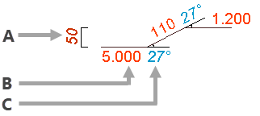 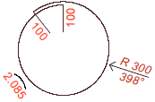 A. Vermaßungstext (Radius, Biegewinkel bei Bogenteillängen), Stiftnummer und Länge der Maßhilfslinie. Die Pfeilspitzen-Einstellungen beziehen sich auf Bogenteillängen; |
Symbole Geben Sie hier die Texteigenschaften und die Stiftnummer der Symbollinien an. Die Texteigenschaften des Biegerollendurchmessers können im Dialogbereich Vermaßung eingestellt werden. 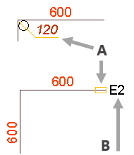 A. Symbollinien; |
Trennlinie an Bogenteillänge Geben Sie hier die Länge und Stiftnummer der Trennlinie an Bogenteillängen an. 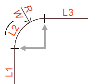 L = Variable Teillänge, W = Biegewinkel, R = Außenradius. |
Hinweistext Geben Sie hier die Textattribute für den Hinweistext an. Diese Textergänzung wird bei vereinfachten Biegeform-Darstellungen verwendet, z. B. bei 3D-Formen, laufenden Metern [LFDM] oder auch Wendeln. 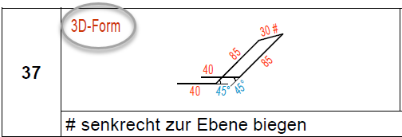 |
Skizze in m/cm vermaßen Diese Einstellung ist nur verfügbar, wenn im Unterdialog Grundwerte Allgemein die Maßeinheit für die Stahlliste auf [m] eingestellt ist. Aktivieren Sie diese Einstellung, um Teillängen < 1 in cm und Längen ≥ 1 in m/cm zu vermaßen. |
Aktivieren oder deaktivieren der alten Biegeliste
Im unteren Dialogbereich können Sie zur Darstellung der "alten" Biegeliste wechseln, indem Sie einen Haken bei alte Biegeliste aktivieren setzen und anschließend auf alten Einstellungsdialog öffnen klicken. Dadurch wird der Dialog Grundwerte Biegeliste mit den entsprechenden Einstellungsmöglichkeiten für die Ausgabe der Biegeliste geöffnet. Die im Dialog Einstellungen Stahlliste gewählten Einstellungen sind dann nicht mehr wirksam.
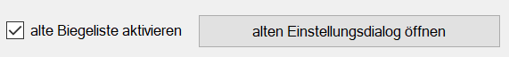 |
Um die "alte" Biegeliste zu deaktivieren, klicken Sie im Stahllisten-Dialog im Bereich Grundwerte auf Biegeliste und entfernen Sie den Haken bei alte Biegeliste aktivieren.
Zurück
Übernimmt die Einstellungen und schließt den Dialog.
Zugehörige Referenzen:
·Stahlliste Ansicht (Dialog): Stahlliste ausgeben/Vorschau generieren